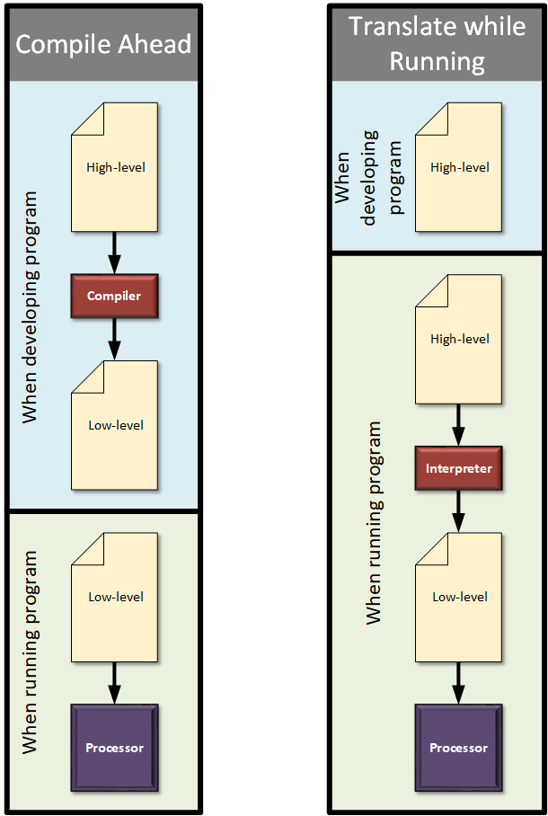
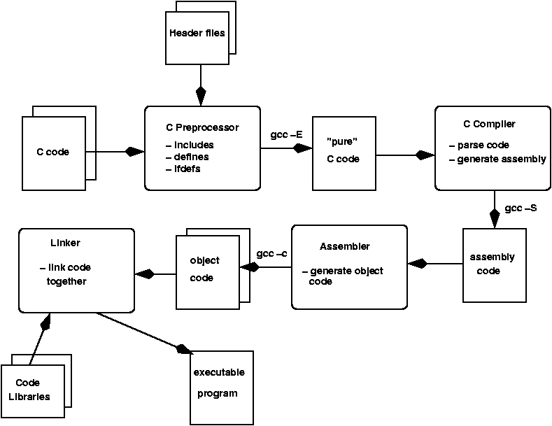
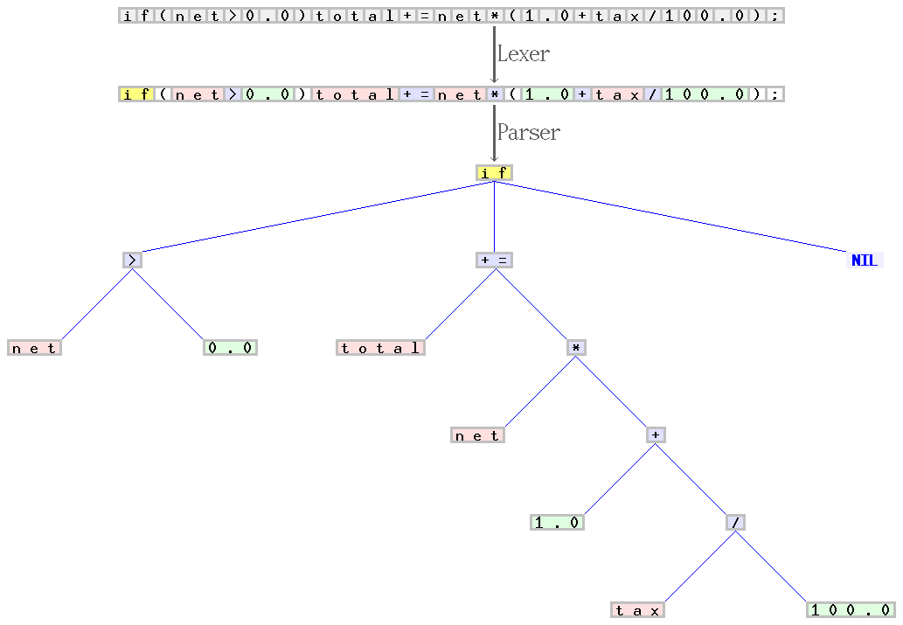
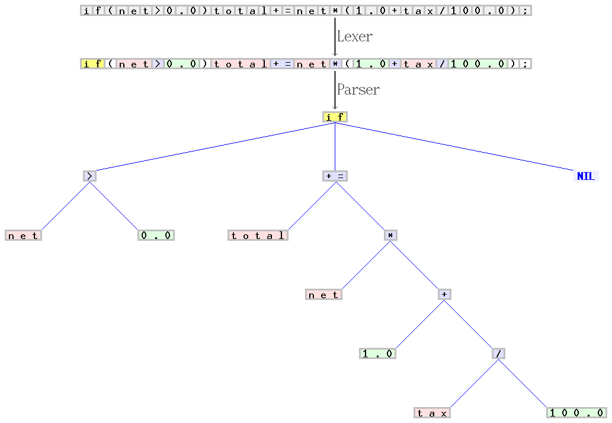
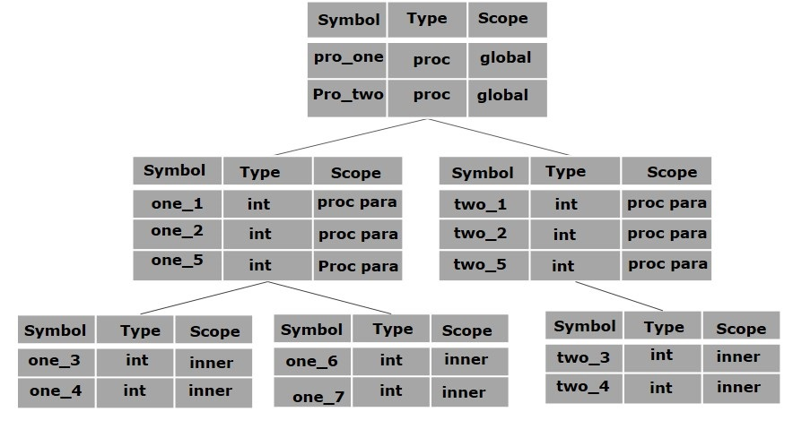

前言
编译这个词是随着近代计算机科学的发展而发明的，为“偷懒”而发明了编译器。其实质工作就是将易于编程人员理解的语言翻译为计算机能理解的机器语言，从这个角度看似乎叫翻译器更为合适，但现今编译器功能已不仅仅只是简单翻译，还提供了优化、链接、代码检查等多种功能。
计算机语言一般分为两种“编译”型和“解释”型，两者的主要区别是对程序的处理方式不同，“编译”型语言是将程序一次性“翻译”完成，再将程序载入执行，有点像翻译某个著作的过程，编译和执行是相对独立操作，如C、C++等；“解释”型语言则是一边“翻译”一边执行，有点像同声翻译的过程，解释和执行是交叉进行的，如一些脚本语言。不管是哪一种语言，“翻译”的角色都必不可少，编译型语言需要编译器（GCC、VS、C++ builder），解释型语言需要解释器（V8），还有同时属于这两种的语言Java，Java先统一编译为一种中间语言（字节码），再由Java虚拟机解释执行，从编程人员的角度看他是编译型语言，从计算机的角度看他确实解释型语言。随着计算机的发展，执行速度、内存不再是瓶颈，软件开发重心将会从执行效率向开发效率倾斜，从语言进化的角度看，未来解释型语言将会逐步丰富，编译型语言将仅存在于专业领域。
编译的由来
谈到编译则不得不提到一位传奇计算机科学家——格蕾丝·赫柏 (Grace Hopper)，这位提出了编译的概念并创造了第一个编译器程序，发现了第一只bug，因此调试程序称作Debug（国内也有四阿哥专治八阿哥一说 ），主导研制了COBOL语言，耶鲁首位女博士，A国第一位女少将。Grace Hopper Celebration of Women in Computing-计算机程序媛大会，Grace Hopper Award（第一个奖颁给了编著计算机程序设计的艺术的高德纳）。


Grace Hopper说了很多挺有意味的语录，流传比较广的有如下一些：
A ship in port is safe, but that’s not what ships are built for.
The only phrase I’ve ever disliked is, ‘Why, we’ve always done it that way.’ I always tell young people, ‘Go ahead and do it. You can always apologize later.'
One accurate measurement is worth a thousand expert opinions.
Leadership is a two-way street, loyalty up and loyalty down. Respect for one’s superiors; care for one’s crew.
I’ve always been more interested in the future than in the past.
The glass is neither half empty nor half full. It’s simply larger than it needs to be.
If you do something once, people will call it an accident. If you do it twice, they call it a coincidence. But do it a third time and you’ve just proven a natural law!
In pioneer days they used oxen for heavy pulling, and when one ox couldn’t budge a log, they didn’t try to grow a larger ox. We shouldn’t be trying for bigger computers, but for more systems of computers.
Manage things. Lead people.
We’ve tended to forget that no computer will ever ask a new question.
If it isn’t bolted down, bring it home.
I will not take what you need to give me. I will take what you want to give me.
To me programming is more than an important practical art. It is also a gigantic undertaking in the foundations of knowledge.
编译的含义
$$
compile = com + pile
$$
com: with, together，pile: a collection of objects laid on top of each other
compile: To put together; to assemble; to make by gathering things from various sources.
将各个资料放在一起，从这堆资料中收集、组装、生产出某个产品。
编译器从其作用看是编程人员与计算机之间的翻译者，从其产品属性看是按照一定的规范（xx语言标准）生产出的产品，即某种语言的实现。
下图为编译的一般过程：
常见编译器
编译器大致分为桌面平台和嵌入式平台两大类，嵌入式平台编译器种类繁多一般各个Soc厂家都会提供自己的编译器，而桌面平台则相对较少，常见的如下表：
| 名称 | |
|---|---|
| GCC（GNU Compiler Collection，GNU编译器套件） | 支持C, C++, Objective-C, Fortran, Ada, Go、D，对C标准的支持是最快的，windows、Linux、嵌入式平台都有应用 |
| Visual C++ | windows平台的首选开发工具，功能齐全IDE——visual studio |
| AOCC、ICC | AMD、Intel针对各自处理器开发的编译器 |
| Clang（LLVM） | 是一个C、C++、Objective-C和Objective-C++编程语言的前端，采用LLVM作为编译器后端。其核心是IR（Intermediate Representation：中间语言），一种类似于汇编的底层语言。 |
| C++ builder | 由Borland开发的针对windows平台的编译器。（vs团队中有部分人员来自Borland公司） |
编译器的组成
编译器整体架构分为前端和后端（或者分析和综合），一般以中间语言（IR）为分界，前端将高级语言通过词法分析、语法分析、语义分析翻译为中间语言，后端则将中间语言翻译为目标代码。词法分析器（lex, flex, oolex, quex, ml-lex etc.），将源码按字符流读入并解析 为一系列记号（token）并记录到符号表中；语法分析器（yacc, bison, ml-yacc, java-CC, ANTLR）将词法分析输出的记号作为输入生成具体语法树（Concrete syntax tree）；语义分析器以具体语法树为输入，输出抽象语法树（Abstract syntax tree），检查语义错误，重载等；优化器进行与机器无关的优化，输出语义上等价的抽象语法树；地址分配，映射变量到静态区、栈区、堆区；生成机器代码，选择合适指令，寄存器分配，指令调度器。

 

编译器维护管理着一个符号表（symbol table）分为全局符号表和有作用域范围的符号表，符号表的实现可以使用线性链表、二叉搜索树、哈希表，大多以哈希表的方式实现。与编译器实现有关，符号表格式一般为：<symbol name, type, attribute>或<symbol name, attribute>，可以用一个有继承关系的数据结构表示，其实现可以用栈结构、链表结构，栈：一个作用域创建一个符号表并保存到栈中，链表：将所有符号表保存在一个链表中，用栈指向当前活动作用域。
思考
方舟编译器从架构看吸取了LLVM的一些思想，统一建模创建了IR语言，直接将代码编译为机器代码消除了虚拟机JIT编译的消耗，而在Android系统中app运行依赖于虚拟机的，如何实现兼容性。（Dalvik、ART）